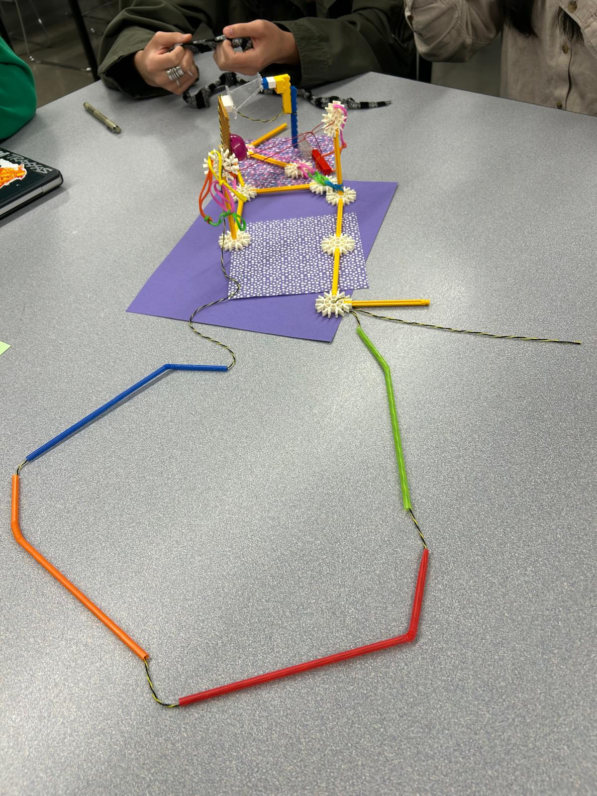

Entry 1: Identifying Science–Art Practices
Activity Context
This activity was part of Identifying Science–Art Practices, where we were asked to choose a keyword discussed in class and explore how it could highlight an area of improvement within scientific practice.
Using materials and collaborative making, we created a small art piece that translates an abstract concept into a physical form. Our chosen keyword was "Communication".
Reflection
For this first activity, my group chose the keyword communication, as it felt as a good connection of both science and art, and also one of the most fragile points within scientific practice.
We approached the assignment by building a physical structure that visually represents how communication in science can easily break down, yet still has the potential to connect distant points.
Using straws, connectors, wires, and unstable joints allowed us to make our interpretation visible rather than simply describing it.
One of the main constraints we faced was structural instability. The materials were lightweight and not designed for precision, which made the overall construction of the piece a bit crooked and highlights its imperfections.
Instead of trying to eliminate this instability, we embraced it as part of the concept. The frequent collapses and adjustments became metaphors for miscommunication, data loss, or misunderstanding in scientific contexts.
These small “failures” forced us to slow down, negotiate decisions as a group, and rethink how each element depended on the others.
Our choice of materials was intentional: the straws act as pathways for information, while the connectors represent translation points where meaning can either be lost in translation or arrive to its destination intact as in science.
The wires extending outward suggest how communication can travel beyond its original source, but only if the internal structure holds. This process raised questions for me about how scientific communication could be made more resilient.
How can systems be designed to anticipate failure rather than deny it? How might visual or material thinking help scientists better communicate uncertainty, complexity, or risk?
Figure 1: Our art piece representing communication in science.

Entry 2
Activity Context
Reflection
My main challenge was deciding how to structure the website so it stays clear as more content gets added.
I kept adjusting small design details to make the page feel cohesive.
Python itself felt surprisingly readable—I was able to follow the logic quickly, and reading the code out loud helped me understand what each part was doing.
Week 3 — September 15–19, 2025
What I Worked On
This week we focused on working with APIs, specifically the Weather API and the World Air Quality Index (WAQI) API.
I learned how to fetch data, handle JSON responses, and display the results in the terminal.
The exercise gave me a clearer sense of how external data can be brought into a program and used creatively.
I also briefly looked over Project 1 and began thinking about how I want to approach it.
Challenges / Reflections
Understanding the basic idea of APIs was straightforward. In essence they let you pull information from another source—but following all the steps in the exercise was a bit tricky.
The instructions were packed with details, and I got a bit confused with connecting the api to receive the information smoothly.
Seeing real-time air quality data appear instantly from anywhere in the world was super cool.
It made me think about how much information exists online and how it could be transformed into something more artistic than just numbers on a screen.
I’m curious about how this kind of data could shape future interactive or generative projects.
Goals for Next Week
- Focus on completing Project 1
- Continue exploring creative possibilities with APIs
Week 4 — September 29– October 3, 2025
What I Worked On
This week we were introduced to Flask and learned how to set up a basic web server using Python.
The in-class exercise walked us through creating routes and connecting them to simple HTML pages, which made the whole process feel surprisingly intuitive.
Seeing Python work together with front-end elements through Jinja templating helped me understand how backend logic and design can connect in a web app.
I also read Paolo Pedercini’s LIKE LIKE neo arcade: The Online Museum of Multiplayer Art (2020).
The idea of an interactive, multiplayer museum space was really interesting, especially how it plays with game aesthetics to create a playful but meaningful environment.
It was a nice example of how digital tools can reshape art experiences in more social and experimental ways.
Challenges / Reflections
Compared to previous weeks, the workflow with Flask felt smoother and easier to follow.
The steps were clear, and I didn’t run into any major issues while building the exercise.
What stood out to me the most was how accessible Flask makes it to build interfaces that go beyond the terminal.
It opens up new possibilities for creative coding projects that combine interaction, narrative, and visual design.
Reading about the oMoMA also reinforced how web-based spaces can become artistic environments rather than just functional websites.
It made me think about how tools like Flask could support more experimental or playful ideas in future projects.
Week 5 — October 6 – 10, 2025
Project 1 Reflection — Air Quality Terminal Program
This week was focused on completing Project 1, which involved building a Python program that retrieves real-time air quality data and displays it in the terminal.
The project expanded on the API work we practiced in class, but required me to structure the code more cleanly and think about how to guide the user through the experience.
Working with the API felt much more intuitive this time.
I understood how to make the request, handle errors, and extract the information I needed from the JSON response.
Once the data was loading properly, the main challenge became deciding how to organize the output so it felt readable and helpful rather than overwhelming.
Formatting the results clearly and adding small touches, like labels and spacing, made a big difference in how easy the program was to use.
Seeing numbers update in real time, especially values tied to specific cities or regions—gave the project a sense of immediacy.
It made me think about how much environmental information is constantly available to us but rarely noticed, and how simple tools like this program can make that invisible layer more visible.
Overall, I’m happy with how the project turned out.
It helped me get more comfortable with APIs, Python structure, and thinking about interaction even in a non-visual interface.
It also made me curious about how this kind of live data could be used in more creative or artistic projects later in the semester.
Week 7 — October 20 - 24, 2025
What I Worked On
This week I completed Exercise 2, which involved building a small Flask web application that used templates, variables, user input, and GET requests.
I worked alone for most of the assignment, but whenever I got stuck, I used help to correct little errors or understand why something wasn’t loading properly.
For Task 1 (t1), I created a new HTML template that inherited from base.html and displayed all the variables passed from Python.
I styled the layout with a donut theme and added the images provided in the project folder.
Using Jinja, I created loops to list toppings and used an if statement to conditionally display elements depending on the donut type.
Connecting all of this with url_for() helped me understand how Flask keeps everything organized when working with static files.
For Task 2 (t2), I designed a full HTML form with two text inputs, a textarea, labels, and a submit button.
I spent time styling it so it felt cohesive with the rest of the donut site.
When the user submits the form, the GET request sends the values back to Python, where I combined all the text into one long string and replaced every vowel with an asterisk.
The transformed message is then displayed on a separate “thank you” page, which made the whole interaction feel complete.
Challenges / Reflections
This exercise helped me understand Flask much more clearly, especially how data moves from the browser → Python → template → back to the browser.
Building both tasks made the connection between routes, templates, and parameters feel intuitive rather than abstract.
I especially enjoyed the creative part, turning a technical assignment into something visually fun.
Designing the donut cards, arranging the toppings with Jinja loops, and styling the form gave me a chance to mix Python logic with HTML/CSS design decisions.
It made the assignment feel more like a small web experience instead of just a backend exercise.
Even if I could've put more effort into polishing the styles, I’m happy with how it turned out overall.
Working alone also pushed me to slow down and double-check each step, especially when linking templates or formatting Jinja syntax.
Every time something didn’t work, it was almost always a tiny detail, so this exercise reinforced how important precision is when building with Flask.
Week 8 — October 27-31, 2025
What I Worked On
This week’s focus was on saving user input to a JSON file and understanding how data can move between JavaScript, Python, Flask routes, and HTML.
Seeing the data update in real time as the form was submitted made the workflow feel much more concrete.
It was interesting to watch all the pieces: frontend, backend, and storage, work together to create the foundation of a functional application.
Our in-class exercise was to create a small interactive feature that receives user input, processes it in Python, updates a JSON file, and then returns a response back to the webpage without reloading.
For my version of the exercise, I created a fortune-teller style interaction where the user selects their current mood, and the application responds with a random “fortune” paired with an emoji.
The fortune and emoji were generated in Python, logged into a JSON file, and then displayed on the page using JavaScript.
Challenges / Reflections
This exercise made all the pieces of the course come together in a satisfying way. The flow of data felt much clearer:
- JavaScript (Fetch) sends the user’s mood to Flask
- Flask processes the input, picks a fortune + emoji, and updates the JSON file
- The JSON is written in real time, making each interaction feel tracked and meaningful
- The page updates dynamically with the new result
I also realized how different languages play distinct roles but work seamlessly when set up correctly.
Python handled the logic, JavaScript managed the interaction, HTML/CSS shaped the presentation, and JSON acted as a lightweight form of storage.
It felt like creating the smallest version of a full web application.
Even though it was a simple fortune-teller, it gave me ideas for more expressive or artistic projects that mix mood, randomness, and data logging in creative ways.
Week 9 — November 3 – 7, 2025
What I Worked On
This week was impacted by the ongoing STM strike, which made it difficult to get to campus.
As a result, I completed the course material remotely. I followed the Flask IV tutorial on my own and worked through the exercises independently.
The tutorial focused on handling more complex routing, updating JSON data, and building small interactive features using Fetch and server responses.
Working solo gives me more time to pause, re-read steps, and test my understanding without feeling rushed.
Outside of class, I continued developing Project 2, the Pilates class booking page.
I worked on creating a clean layout, organizing the available class options, and planning how a user would navigate through the booking system.
It was interesting to apply the Flask knowledge from recent weeks to a more structured, real-world-style project.
Thinking through user interaction, especially how inputs would eventually be processed and interacted with, helped me see how the concepts from our exercises translate into a functional interface.
Challenges / Reflections
Although I wasn’t able to attend class in person, following the tutorial remotely was manageable.
It reinforced my understanding of how Flask handles dynamic updates and user data, and I appreciated having the time to experiment at my own pace.
Working independently also made me more aware of small details in the code, especially when debugging without immediate help.
Continuing the Pilates booking page reminded me how web development requires both design thinking and technical structure.
I enjoyed shaping the visual layout while also planning how the backend could eventually support bookings.
Seeing these two sides come together has made the project feel more concrete and exciting.
Week 10 — November 10–14, 2025
What I Worked On
This week we learned how to connect Flask with MongoDB, shifting from storing data in local JSON files to using a live cloud database.
The tutorial walked us through setting up a MongoDB Atlas cluster, configuring network access, creating a collection, and securely connecting to it using environment variables and MONGO_URI.
We practiced inserting, retrieving, and updating documents, and experimented with logical operators to filter data directly from the database.
We also explored how Flask-PyMongo manages database interactions, making it easier for the app to perform CRUD operations.
It was interesting to see how seamlessly Flask can communicate with a cloud-based database compared to manually reading and writing JSON files.
In addition to the technical work, I read the article from the “AI & More” section about Refik Anadol, whose data-driven installations visualize massive datasets in expressive, fluid ways.
It connected nicely to what we learned in class, showing how stored data can become the basis for immersive, large-scale artworks.
Challenges / Reflections
Because I already had experience with databases, including MongoDB, this week felt familiar and straightforward.
I’ve set up clusters before, but this time I understood more clearly how Flask handles the connection through Flask-PyMongo and how environment variables help keep credentials secure.
The exercises reinforced my understanding of CRUD operations in the context of a web application rather than isolated scripts.
This week also made me think about how I could apply MongoDB to my own projects.
Using MongoDB would make the system more scalable, better structured, and more secure, especially if the app grows in complexity.
The Refik Anadol reading added an artistic dimension to all of this.
It made me think about how databases aren’t just storage, they can become sources for dynamic, generative, or interactive work.
Week 11 — November 17–21, 202
What I Worked On
This week we learned how to use WebSockets in Flask to enable real-time, bidirectional communication between the client and server.
Using Flask-SocketIO, we set up a WebSocket-enabled server and connected it to a SocketIO client in the browser.
Unlike regular HTTP requests, WebSockets allow continuous communication without refreshing the page, which opens the door to much more dynamic, interactive applications.
In class, we created a live chat feature where messages sent by one user instantly appeared for all other connected users.
After that, we expanded the idea by integrating SocketIO with a p5.js sketch, building a collaborative visual canvas where multiple users could add flowers in real time.
Seeing the shared canvas update simultaneously across clients made the concept of real-time synchronization feel very clear and exciting.
Challenges / Reflections
This week’s topic was one of the most engaging so far.
Real-time communication adds a completely new layer of interactivity to everything we have built in Flask.
Watching sketches update live—almost like a multiplayer game or collaborative art platform—really helped me understand the creative potential of WebSockets.
Week 12 — November 24–28, 2025
What I Worked On
This week we completed Exercise 5, which focused on working with a larger MongoDB dataset and using Flask to transform that data into simple visual outputs on the webpage.
The goal was to practice retrieving specific information from a database, filtering it using Mongo queries, and representing the results in a clear, expressive way on the front end.
For my exercise, I wrote several queries that extracted different types of information from the dataset. Each query returned a filtered subset of documents that I then formatted into a visual layout. Some of my outputs used icons, spacing, and color to help show patterns in the data instead of simply printing raw JSON.
This helped me understand how data visualization can start small through meaningful formatting, before becoming full charts or graphics.
Challenges / Reflections
The logic of the queries was the most challenging part. I struggled at first with:
- choosing the correct MongoDB operators,
- matching field names in the documents,
- structuring filters so they returned the right subset of data,
- and properly passing the results into the HTML template.
Sometimes the query returned nothing because one field was slightly misspelled or because the filter logic didn’t match the structure of the dataset.
Debugging required printing the results in the terminal and checking the database carefully before adjusting the query.
Another challenge was deciding how to visualize the results in a way that wasn’t just text dumped onto the screen.
I experimented with spacing, grouping, spirals, and simple styling to give each query its own personality.
Even though the visuals were minimalist, the process helped me think about how design and data interact.
Once everything was working, it was satisfying to see how the MongoDB data could be reshaped into different visual forms just by changing how and what we queried.
This exercise made the connection between backend logic and frontend expression feel much clearer.